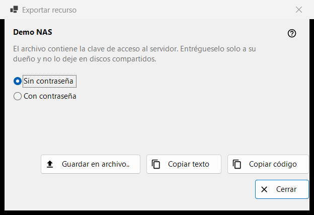
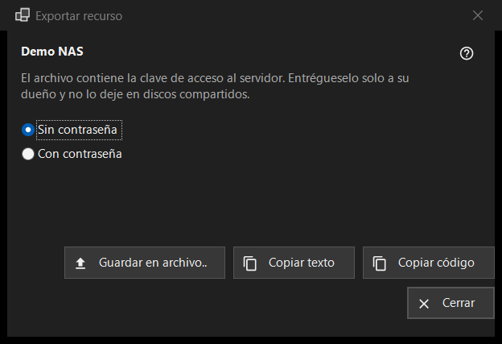

Exportar recurso
Para qué sirve
Prepara la configuración de un servidor SFTP para que otro equipo o un teléfono pueda importarla. Se abre desde «Exportar..» en el menú «Más» de la lista de recursos y necesita un recurso seleccionado; una carpeta compartida por Share Manager se exporta desde Share Manager.


En este orden
- Lea la advertencia bajo el nombre del recurso.
- Elija «Sin contraseña» (predeterminado) o «Con contraseña».
- Pulse «Guardar en archivo..», o copie la configuración como texto o como un código breve.
- Entregue el resultado solo a su propietario.
Los elementos
La advertencia
La línea bajo el nombre dice que el archivo lleva la clave de acceso al servidor: entréguelo solo a su propietario y nunca lo deje en discos compartidos. Vale para el archivo, para el texto copiado y para el código por igual.
Sin o con contraseña
«Sin contraseña» está seleccionado al principio. «Con contraseña» solo está activo cuando la contraseña guardada se puede volver a leer; de lo contrario aparece la sugerencia «La contraseña no está guardada - el archivo irá sin ella.». La contraseña se descifra en memoria para la exportación y no va a ningún otro sitio.
Guardar, copiar texto, copiar código
«Guardar en archivo..» escribe un archivo .fmscfg mediante un cuadro de diálogo de guardado; el escritor rechaza los discos FAT o exFAT, los discos de red y las carpetas que otros usuarios pueden modificar, y nunca deja un archivo escrito a medias. «Copiar texto» pone el documento de configuración en el portapapeles y «Copiar código» un código breve con el mismo contenido. Ambos se copian con las marcas de privacidad (sin historial del portapapeles, sin sincronización en la nube). La línea de estado muestra el resultado.
Qué se puede exportar
Solo un servidor SFTP cuya clave el programa ya recuerde. La ventana se abre en cualquier caso, y una negativa aparece en la línea de estado cuando se pulsa un botón: una carpeta de red (SMB) no se puede describir con este archivo; la clave del servidor no está recordada (abra el recurso una vez y confirme la clave); el recurso no tiene una dirección que entregar; la carpeta está escrita de una forma que el archivo no acepta (corríjala con «Editar..»).